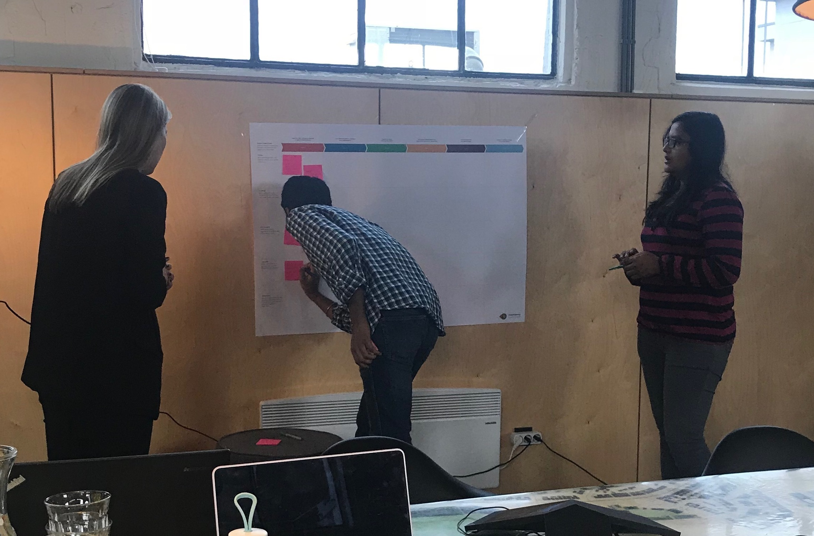

User Journey MapsUser Journey Maps
User Journey MapsUser Journey MapsWhen wanting to gain insight into how users experience a product based on their unique motivation and goals. It can also be used for identifying opportunities.
This method zooms out on the product as a whole, rather than to observe/test fractions of the products.
1. Start by working on user personas and scenarios:
Solid user journey maps are usually created alongside, or immediately following, personas and scenarios documents. These deliverables should be done in direct contact with the customers who use the product/service;
2. Great user journeys are based on research:
Rich, qualitative data from primary research is the only way to be sure to craft deep, compelling narratives that reflect people’s needs, feelings and perceptions occurring before, during, and after product interactions;
3. Map out the journey:
The map should represent a journey specific to a persona, include a description of the persona and articulate the event it illustrates (either an entire relationship life cycle or a specific scenario).
It should be an honest representation of the experience, and include moments of indecision, confusion, frustration, as well as delight and closure.
Multiple maps are needed for multiple personas, since each persona experiences the journey differently.

- Shows the context in which products and services are used in the real world;
- Helps teams develop a shared vision about ways to augment existing user behaviour within the actual context of use.
- Multiple maps are needed for multiple personas.